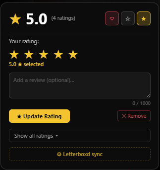
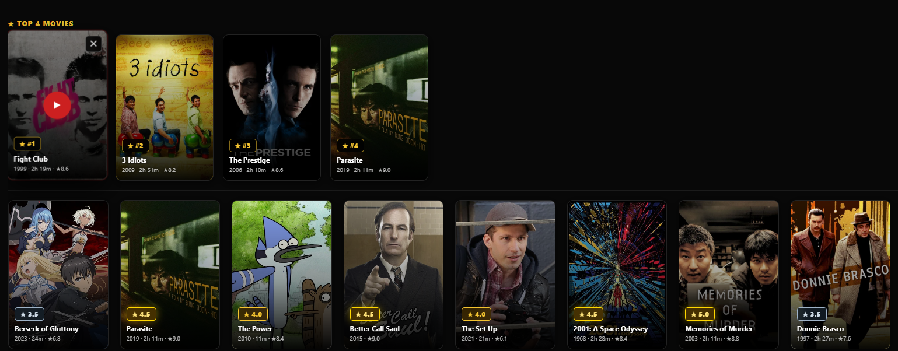
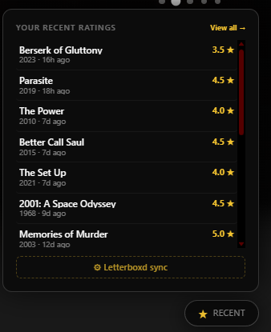

StarTrack
Letterboxd-style ratings in Jellyfin, synced everywhere.
Features
What it doesStar ratings in the Jellyfin UIRate anything from a tidy sidebar panel or an on-poster overlay, without leaving the player. Your scores sit right alongside the library.
Two-way syncKeep ratings in step with Trakt, Simkl, Letterboxd and Yamtrack in both directions. Rate once and it shows up everywhere you track films.
Watched & likedBeyond the stars, it syncs watched state and likes so your full history stays consistent across every service.
BackfillOn first run it imports the ratings you've already given, so you start fully in sync instead of from zero.
Yamtrack CSV importBring your back catalogue in from a Yamtrack CSV export in a couple of clicks.
Screenshots
A closer lookA closer look inside StarTrack.



Install
Jellyfin 10.11+Two ways to add StarTrack to your server:
- Add the plugin repository in Jellyfin (Dashboard → Plugins → Repositories), then install from the catalogue and restart.
- Or download the latest release
.zipand extract it into your Jellyfin plugins folder, then restart.
Requires Jellyfin 10.11+ / .NET 9. See the GitHub page for exact steps.